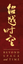
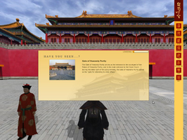
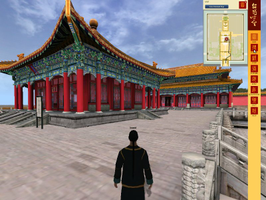
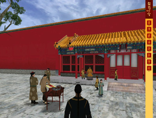
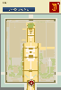

Virtual Forbidden City
Archivierte Anleitung
Dieser Artikel wurde archiviert, da er - oder Teile daraus - nur noch unter einer älteren Ubuntu-Version nutzbar ist. Diese Anleitung wird vom Wiki-Team weder auf Richtigkeit überprüft noch anderweitig gepflegt. Zusätzlich wurde der Artikel für weitere Änderungen gesperrt.
Zum Verständnis dieses Artikels sind folgende Seiten hilfreich:

Das Palastmuseum  in Peking (chin. Beijing) und IBM
in Peking (chin. Beijing) und IBM  haben den Kaiserpalast, welcher zum Weltkulturerbe der UNESCO zählt, der virtuellen Welt geöffnet. Es handelt sich um eine maßstabsgetreue und authentische Nachbildung der Purpurnen Verbotenen Stadt (chin. Zijincheng), welche sich über ein Gebiet von 72 Hektar erstreckt. Die Stadt spiegelt die Weltanschauung der Kaiser wieder. Der schachbrettartige Grundriss – ausgerichtet an der Nord-Süd-Achse – und der Kaiserpalast als Zeichen der Macht im Zentrum.
haben den Kaiserpalast, welcher zum Weltkulturerbe der UNESCO zählt, der virtuellen Welt geöffnet. Es handelt sich um eine maßstabsgetreue und authentische Nachbildung der Purpurnen Verbotenen Stadt (chin. Zijincheng), welche sich über ein Gebiet von 72 Hektar erstreckt. Die Stadt spiegelt die Weltanschauung der Kaiser wieder. Der schachbrettartige Grundriss – ausgerichtet an der Nord-Süd-Achse – und der Kaiserpalast als Zeichen der Macht im Zentrum.
|  |  |  |
| Eingang zur verbotenen Stadt | Halle zur Vollkommenen Harmonie | Kaiserlicher Garten |
Mit "The Virtual Forbidden City: Beyond Space and Time" hat man die Möglichkeit, die Verbotene Stadt zu erkunden und die Kunst sowie die architektonischen Schätze der Ming- und Qing-Dynastien zu bestaunen. Neben der Teilnahme an virtuellen Rundgängen kann man mit anderen Besuchern interagieren.
Registrierten Nutzern stehen weitere Funktionen, wie z.B. Bogenschießen, Kricket oder eine Partie Go, zur Verfügung. Diese ist kostenlos über die Homepage von Virtual Forbidden City vorzunehmen.
Installation¶
Von hier  das .rpm-Paket für Linux herunterladen und anschließend in ein .deb-Paket umwandeln [1] [2]:
das .rpm-Paket für Linux herunterladen und anschließend in ein .deb-Paket umwandeln [1] [2]:
sudo alien VirtualForbiddenCity.rpm --scripts
Hinweis!
Fremdpakete können das System gefährden.
Da das Programm so lediglich mit Root-Rechten läuft, müssen die Ordnerrechte [3] von /opt/VirtualForbiddenCity angepasst werden. Über den Menüeintrag "Anwendungen -> Internet -> Virtual Forbidden City" kann man das Programm anschließend starten.
Steuerung¶
Der Avatar wird mit den Tasten ↑ + → + ↓ + ← durch den den Kaiserpalast bewegt. An der rechten Seite findet man eine Leiste, welche die Erkundungstour abrundet. Einige Funktionen stehen nur registrierten Nutzern zur Verfügung, diese sind in der Tabelle grau hinterlegt.
| Steuerung | |||
| Menü | Titel | Beschreibung | Tastenkürzel |
| "Map" | Übersichtskarte - Anzeige der aktuellen Position, Zoom, auf Wunsch ("View Detailed Map") detaillierte Informationen zu Gebäuden. | F2 | |
| "Search" | Suche nach Gegenständen, Personen, Fotos et cetera. | ||
| "View" | Kameraperspektive und Kamerawinkeln wählen. | F4 | |
| "Picture" | Bildschirmfotos erstellen. Diese können mit Tags versehen und per E-Mail versandt werden. Sie werden im "Scrapbook" gespeichert. | F5 | |
| "Lead" | Als Reiseleiter eine Tour anführen und Freunde aus dem "Scrapbook" dazu einladen.. | F6 | |
| "Scrapbook" | Im Scrapbook werden Benutzerinformationen und Fotos gespeichert. Hier kann man unter anderem die Spracheinstellung sowie das Aussehen des persönlichen Avatars verändern. | F7 | |
| "Chat" | Mit anderen Besuchern in Kontakt treten sowie an Führungen teilnehmen. | F8 | |
| "Help" | Hilfemenü. | F1 | |
|  |
| Übersichtskarte |
Zur Teilnahme an einer Führung bewegt man sich auf einen Reiseleiter (Tour guide) zu oder wählt diesen mit einem  Rechtsklick an. Das Chat-Fenster öffnet sich und mit betätigen der Schaltfläche "Yes" nimmt man an der Tour teil. Ein Rechtsklick auf andere Charaktere erlaubt es diese als Freunde hinzuzufügen und diese, sofern sie online sind, zu einer gemeinsamen Erkundungstour einzuladen.
Rechtsklick an. Das Chat-Fenster öffnet sich und mit betätigen der Schaltfläche "Yes" nimmt man an der Tour teil. Ein Rechtsklick auf andere Charaktere erlaubt es diese als Freunde hinzuzufügen und diese, sofern sie online sind, zu einer gemeinsamen Erkundungstour einzuladen.
Einstellungen¶
Über Strg + O gelangt man zu den Audio- und Videoeinstellungen. Hier kann man die Auflösung, die Grafikdetails sowie den zu verwendenden Audiotreiber ändern. Die Musik, welche während der ganzen Zeit im Hintergrund läuft, kann man deaktivieren.
Tastenkürzel¶
| Tastenkürzel | |
| Taste(n) | Funktion |
| Strg + O | Einstellungen |
| F9 | Kameraperspektive ändern. |
| Kamerawinkeln verändern / Avatare auswählen. |
| ↑ + → + ↓ + ← | Steuerung des Avatars - doppeltes betätigen der Tasten beschleunigt den Avatar. |
| Esc | Programm beenden / Menüpunkt verlassen bzw. schließen. |
| The Virtual Forbidden City: Beyond Space and Time | |
| Genre: | Bildung |
| Sprache: | |
| Systemvoraussetzungen: | RAM 2GB; HDD 2GB; Grafikkarte 128MB; Monitor mit 1280x1024 (32 bit) |
| Medien: | Download |
| Läuft mit: | nativ |
- Erstellt mit Inyoka
-
 2004 – 2017 ubuntuusers.de • Einige Rechte vorbehalten
2004 – 2017 ubuntuusers.de • Einige Rechte vorbehalten
Lizenz • Kontakt • Datenschutz • Impressum • Serverstatus -
Serverhousing gespendet von